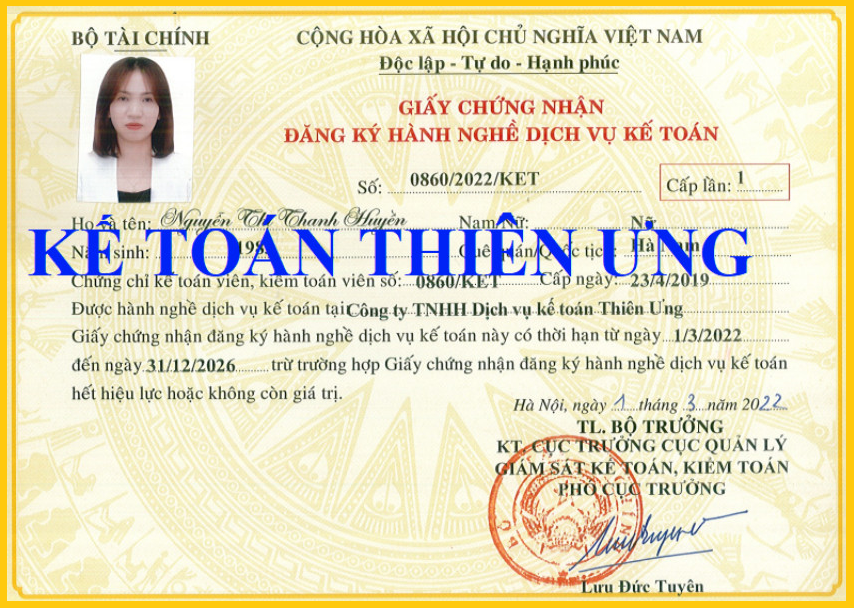
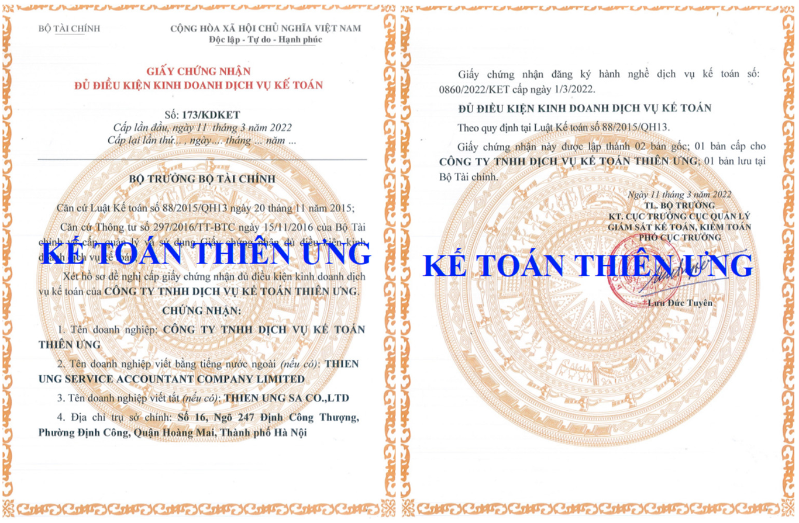

Công ty Kế Toán Diệu Tâm – chuyên nhận làm Dịch Vụ Kế Toán Thuế trọn gói cho mọi loại hình doanh nghiệp tại Hà Nội
Kế Toán Diệu Tâm là một doanh nghiệp hàng đầu hoạt động lâu năm trong lĩnh vực "Đào tạo kế toán thuế thực hành thực tế" và làm "Dịch vụ kế toán - hoàn thiện sổ sách - lập báo cáo tài chính cuối năm - quyết toán thuế" cho rất nhiều Doanh nghiệp trong nước (đặc biệt là tại Hà Nội).
- Chúng tôi có đủ điều kiện pháp lý để hành nghề Dịch vụ kế toán thuế. Hơn nữa, với đội ngũ kế toán thuế dày dặn kinh nghiệm, luôn luôn cập nhật các quy định về Luật Thuế mới nhất và được củng cố chuyên môn thường xuyên (nhờ lợi thế hoạt động đào tạo kế toán lâu năm) vậy nên Quý Doanh Nghiệp có thể hoàn toàn yên tâm về chất lượng dịch vụ mà chúng tôi cung cấp.


Chúng tôi cam kết sẽ mang đến cho Quý khách những sản phẩm dịch vụ
UY TÍN - CHẤT LƯỢNG với một mức phí HỢP LÝ NHẤT.
Xin mời Quý Doanh Nghiệp tham khảo một số Gói dịch vụ kế toán mà chúng tôi đã và đang mang đến cho các doanh nghiệp trên địa bàn Hà Nội trong những năm qua:
- GÓI SỐ 1: LÀM THỦ TỤC ĐĂNG KÝ THUẾ BAN ĐẦU CHO CÁC DOANH NGHIỆP MỚI THÀNH LẬP
+ Đăng ký phương pháp kê khai - tính thuế Giá trị gia tăng theo Tháng hoặc Quý.
+ Mua chữ ký số điện tử để kê khai và nộp tiền thuế các loại.
+ Kê khai và nộp tiền Lệ phí môn bài.
+ Mở và đăng ký tài khoản ngân hàng với Cơ quan thuế.
- GÓI SỐ 2: XÂY DỰNG BỘ MÁY KẾ TOÁN CÙNG HỆ THỐNG SỔ SÁCH CHO DOANH NGHIỆP
+ Tư vấn và xây dựng bộ máy nhân sự kế toán với số lượng nhân viên cụ thể, được phân công nhiệm vụ cụ thể, rõ ràng từ quy trình thực hiện cho đến việc giám sát kiểm tra qua lại giữa các bộ phận kế toán với nhau.
+ Làm hợp đồng lao động, xây dựng Quy chế Lương thưởng, Thang Bảng Lương và làm các thủ tục Bảo hiểm xã hội cho người lao động trong Doanh nghiệp.
+ Tư vấn xây dựng hệ thổng sổ sách kế toán bao gồm: lựa chọn chế độ kế toán - lựa chọn công cụ ghi sổ trên EXCEL hay phần mềm kế toán - xây dựng phương pháp tính giá xuất kho - xây dựng phương pháp tính giá thành - đăng ký phương pháp trích khấu hao tài sản cố định lên Cơ quan thuế...
+ Xây dựng phương pháp lưu trữ và quản lý luân chuyển hóa đơn chứng từ một cách hợp lý hợp lệ hợp pháp.
+ Làm hợp đồng lao động, xây dựng Quy chế Lương thưởng, Thang Bảng Lương và làm các thủ tục Bảo hiểm xã hội cho người lao động trong Doanh nghiệp.
+ Tư vấn xây dựng hệ thổng sổ sách kế toán bao gồm: lựa chọn chế độ kế toán - lựa chọn công cụ ghi sổ trên EXCEL hay phần mềm kế toán - xây dựng phương pháp tính giá xuất kho - xây dựng phương pháp tính giá thành - đăng ký phương pháp trích khấu hao tài sản cố định lên Cơ quan thuế...
+ Xây dựng phương pháp lưu trữ và quản lý luân chuyển hóa đơn chứng từ một cách hợp lý hợp lệ hợp pháp.
- GÓI SỐ 3: KÊ KHAI - LÀM BÁO CÁO THUẾ HÀNG THÁNG/ HÀNG QUÝ, BÁO CÁO TẠM TÍNH THUẾ THU NHẬP DOANH NGHIỆP THEO QUÝ
+ Kiểm tra, giám sát toàn bộ hóa đơn chứng từ đầu vào - đầu ra phát sinh trong tháng - quý.
+ Theo dõi và tư vấn về tính hợp lý, hợp lệ, hợp pháp của hóa đơn chứng từ phát sinh trong kỳ đó.
+ Kê khai và nộp báo cáo Thuế Giá Trị Gia Tăng, Thuế Thu Nhập Doanh Nghiệp (tạm tính), Thuế Thu Nhập Cá Nhân. Nộp tiền thuế tương ứng nếu có phát sinh trong kỳ kê khai tính thuế.
+ Tư vấn các giải pháp tối ưu chi phí cho doanh nghiệp.
+ Theo dõi và tư vấn về tính hợp lý, hợp lệ, hợp pháp của hóa đơn chứng từ phát sinh trong kỳ đó.
+ Kê khai và nộp báo cáo Thuế Giá Trị Gia Tăng, Thuế Thu Nhập Doanh Nghiệp (tạm tính), Thuế Thu Nhập Cá Nhân. Nộp tiền thuế tương ứng nếu có phát sinh trong kỳ kê khai tính thuế.
+ Tư vấn các giải pháp tối ưu chi phí cho doanh nghiệp.
- GÓI SỐ 4: DỊCH VỤ LẬP BÁO CÁO TÀI CHÍNH CUỐI NĂM CHO DOANH NGHIỆP
+ Kiểm tra, rà soát hóa đơn chứng từ phát sinh trong năm.
+ Hoàn thiện sổ sách kế toán.
+ Lên bộ báo cáo tài chính cuối năm.
+ Làm tờ khai quyết toán thuế Thu Nhập Cá Nhân - Thu Nhập Doanh Nghiệp.
+ Hoàn thiện sổ sách kế toán.
+ Lên bộ báo cáo tài chính cuối năm.
+ Làm tờ khai quyết toán thuế Thu Nhập Cá Nhân - Thu Nhập Doanh Nghiệp.
- GÓI SỐ 5: DỊCH VỤ KẾ TOÁN TRỌN GÓI CHO DOANH NGHIỆP
+ Gộp chung các nội dung của GÓI SỐ 3 + GÓI SỐ 4
+ Doanh nghiệp được miễn phí hoàn toàn thủ tục đăng ký ban đầu (tại GÓI SỐ 1 nếu có)
+ Doanh nghiệp được miễn phí hoàn toàn thủ tục đăng ký ban đầu (tại GÓI SỐ 1 nếu có)
- GÓI SỐ 6: KIỂM TRA VÀ HOÀN THIỆN SỔ SÁCH KẾ TOÁN
+ Kiểm tra, rà soát lại toàn bộ chứng từ - hóa đơn - báo cáo thuế - báo cáo tài chính - sổ sách kế toán phát sinh trong thời gian mà DN yêu cầu.
+ Đưa ra các cảnh báo về việc phát hiện các sai phạm và hướng xử lý cho Doanh Nghiệp.
+ Hoàn thiện bổ sung và khắc phục các sai sót trong chứng từ - sổ sách - báo cáo
+ Đưa ra các cảnh báo về việc phát hiện các sai phạm và hướng xử lý cho Doanh Nghiệp.
+ Hoàn thiện bổ sung và khắc phục các sai sót trong chứng từ - sổ sách - báo cáo
- GÓI SỐ 7: DỊCH VỤ LÀM BÁO CÁO TÀI CHÍNH CUỐI NĂM
+ Tiếp nhận và kiểm tra rà soát toàn bộ hóa đơn chứng từ phát sinh trong năm để nhận định tính hợp lý - hợp lệ - hợp pháp.
+ Bổ sung điều chỉnh các tờ khai - báo cáo thuế còn thiếu sót trong năm
+ Lập Báo cáo tài chính năm
+ Lập các tờ khai quyết toán thuế Thu Nhập Doanh Nghiệp - Thu Nhập Cá Nhân
+ In sổ sách - báo cáo cuối năm và quyết toán khi có yêu cầu.
+ Bổ sung điều chỉnh các tờ khai - báo cáo thuế còn thiếu sót trong năm
+ Lập Báo cáo tài chính năm
+ Lập các tờ khai quyết toán thuế Thu Nhập Doanh Nghiệp - Thu Nhập Cá Nhân
+ In sổ sách - báo cáo cuối năm và quyết toán khi có yêu cầu.
- GÓI SỐ 8: DỊCH VỤ KẾ TOÁN TRỌN GÓI CHO DOANH NGHIỆP
+ Tiếp nhận hóa đơn chứng từ phát sinh trong tháng/quý để kê khai làm báo cáo thuế Giá Trị Gia Tăng hàng tháng hàng quý.
+ Tạm tính thuế Thu Nhập Doanh Nghiệp căn cứ trên doanh thu và chi phí trong quý để báo cáo Doanh Nghiệp về việc trong quý đó có cần nộp thuế TNDN tạm tính hay không.
+ Lập tờ khai khấu trừ thuế Thu Nhập Cá Nhân phát sinh theo tháng - quý và thông báo Doanh Nghiệp số thuế phải nộp (nếu có).
+ Lên sổ sách - lập báo cáo tài chính cuối năm
+ Lập các tờ khai quyết toán thuế TNCN - TNDN đi cùng bộ Báo Cáo Tài Chính cuối năm.
+ Hoàn thiện sổ sách - in ấn, sắp xếp hồ sơ chứng từ bàn giao cho doanh nghiệp
+ Quyết toán thuế năm khi có yêu cầu của cơ quan thuế.
+ Tạm tính thuế Thu Nhập Doanh Nghiệp căn cứ trên doanh thu và chi phí trong quý để báo cáo Doanh Nghiệp về việc trong quý đó có cần nộp thuế TNDN tạm tính hay không.
+ Lập tờ khai khấu trừ thuế Thu Nhập Cá Nhân phát sinh theo tháng - quý và thông báo Doanh Nghiệp số thuế phải nộp (nếu có).
+ Lên sổ sách - lập báo cáo tài chính cuối năm
+ Lập các tờ khai quyết toán thuế TNCN - TNDN đi cùng bộ Báo Cáo Tài Chính cuối năm.
+ Hoàn thiện sổ sách - in ấn, sắp xếp hồ sơ chứng từ bàn giao cho doanh nghiệp
+ Quyết toán thuế năm khi có yêu cầu của cơ quan thuế.
Ngoài các gói dịch vụ kế toán kể trên, Kế Toán Diệu Tâm còn cung cấp cho Quý Doanh Nghiệp các gói dịch vụ đặc biệt hỗ trợ theo vụ việc phát sinh như:
+ Xử lý các vấn đề liên quan đến Bảo Hiểm Xã Hội , xây dựng Quy Chế Lương – Thưởng, Quyết Toán Thuế TNCN,…
Trên đây là toàn bộ nội dung các gói Dịch Vụ Kế Toán Thuế mà Công ty Kế toán Diệu Tâm – Công ty chuyên làm dịch vụ kế toán thuế đã và đang cung cấp cho rất nhiều Doanh nghiệp tại Hà Nội.
Để được tư vấn cụ thể, Quý Doanh nghiệp vui lòng liên hệ số:
Để được tư vấn cụ thể, Quý Doanh nghiệp vui lòng liên hệ số:
Hotline – 0777.315.188 (Call-Zalo)
-----------------------------------------------------------------------------
Kính chúc Quý Doanh Nghiệp: An Khang - Thịnh Vượng
Rất mong được hợp tác cùng Quý Doanh Nghiệp
Trân Trọng!
-----------------------------------------------
KẾ TOÁN DIỆU TÂM
Hotline: 0777.315.188 (Call-Zalo)
Website: ketoandieutam.vn - ketoandieutam.com
Gmail: ketoandieutam@gmail.com
Kính chúc Quý Doanh Nghiệp: An Khang - Thịnh Vượng
Rất mong được hợp tác cùng Quý Doanh Nghiệp
Trân Trọng!
-----------------------------------------------
KẾ TOÁN DIỆU TÂM
Hotline: 0777.315.188 (Call-Zalo)
Website: ketoandieutam.vn - ketoandieutam.com
Gmail: ketoandieutam@gmail.com